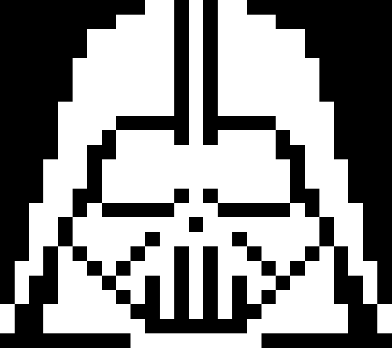

{kind=link}
{kind=link}
{kind=link}
{kind=link}
{kind=link}
- 1
-
Wir importieren die Klasse
BrickletOLED128x64V2aus der Tinkerforge-Bibliothek, die uns die Funktionen des Displays zur Verfügung stellt. - 2
- Denkt dran, eure eigene UID einzutragen.
- 3
-
Wir löschen den Display-Inhalt, damit wir mit einem leeren Display starten. Die Funktion
clear_display()erledigt das.
4 Bilder
Zusammenfassung
Im vierten Kapitel…
Schritt für Schritt zum Ziel
Der Weg dahin führt über folgende Schritte:
| # | Was? | Wo? |
|---|---|---|
| 1 | Wir machen uns mit dem Display vertraut. | Abschnitt 4.1 |
| 2 | Wir lernen das Pixel kennen und schalten sie im Display an und aus. | Abschnitt 4.2 |
| 3 | Wir führen die Bitmap als eine Sammlung von Pixelwerten ein. | Abschnitt 4.3 |
| 4 | Wir lernen, wie man Buchstaben mit Pixeln darstellen kann. | Abschnitt 4.3.2 |
| 5 | Wir lernen Vektorgrafiken kennen. | Abschnitt 4.4 |
| 6 | Wir zeigen ein Bild als Bitfolge aus dem Display an. | Abschnitt 4.5 |
| 7 | Wir erstellen eine Animation. | Abschnitt 4.7 |
| 8 | Wir verstehen wie wir Redunanz in Bildern nutzen können. | ?sec-images-compressed |
| 9 | Wir programmieren ein Tic Tac Toe-Spiel. | Abschnitt 4.10 |
4.1 Experimentaufbau
4.1.1 Hardware
In den Experimenten dieses Kapitels verwenden wir ein einfaches Display, das wir an unseren Master Brick anschließen. Das Display kann einzelne Pixel weiß aufleuchten lassen und damit einfache Bilder und auch Texte darstellen. Insgesamt stehen uns 128 x 64 Pixel zur Verfügung, also 8192 einzelne Bildpunkte. Damit können wir arbeiten.
Die vollständige Hardwareliste für dieses Kapitel sieht so aus:
4.1.2 Erste Schritte mit dem Display
Wie immer geht es zuerst in den Brick Viewer. Verbindet euch mit dem Master Brick und ihr solltet die angeschlossenen Geräte sehen können. Den Infrarotsensor kennen wir bereits aus dem letzten Kapitel. Wir konzentrieren uns deshalb auf das neue Display, das ihr im Tab “OLED 128x64 Bricklet 2.0” findet.
Die Oberfläche für das Display seht ihr in Abbildung 4.1. Im Wesentlichen kann das Display drei Dinge:
- Einzelne Pixel ein- und ausschalten
- Seinen gesamten Inhalt löschen
- Text anzeigen, was ein Spezialfall von Punkt 1 ist
Alle genannten Funktionen können wir direkt im Brick Viewer ausprobieren. Mit der Maus können wir auf der schwarzen Fläche freihändig zeichnen und unser Resultat mit “Draw on Display” auf das Display übertragen. Mit “Clear Display” löschen wir den gesamten Inhalt wieder. Alternativ können wir Text in das Textfeld eingeben und mit “Send” anzeigen lassen.
Für Text können wir die Position über die Angabe der Zeile (Line) sowie der Position in der Zeile (Pos) bestimmen. Im Dropdown seht ihr, dass die Zeilen von 0 bis 7 und die Positionen von 0 bis 21 nummeriert sind. Das Display teilt die 128 Pixel Breite in 22 Zeichenpositionen und die 64 Pixel Höhe in 8 Textzeilen auf. Die eingebaute Schrift nutzt ein 5x8-Pixel-Raster pro Zeichen und fügt passende Abstände ein.
In Abbildung 4.3 könnt ihr den Unterschied zwischen meinem kläglichen Versuch, den Titel des Buches mit der Maus zu zeichnen, und der Textausgabe sehen. Das Display ist zwar nicht besonders groß, aber für einfache Grafiken und Texte reicht es allemal. Wie ihr seht, ist der Text “Hands-On Computer Science” zu lang für eine Zeile und wird daher abgeschnitten.
4.2 Pixel
Nachdem wir das Display im Brick Viewer ausprobiert haben, wollen wir uns seine Funktionen in Python anschauen. Dazu stellen wir wie immer die Verbindung her und erzeugen eine Instanz des Display-Objekts:
Über die Variable oled können wir von nun an die verschiedenen Funktionen des Displays verwenden. Eine davon seht ihr bereits im Codebeispiel, nämlich das Löschen des Displays mit clear_display(). Die andere wesentliche Funktion ist das An- und Ausschalten einzelner Pixel.
Das Wort Pixel wird vom englischen “picture element” abgeleitet, also Bildelement. Ein Pixel ist der kleinste darstellbare Punkt auf einem Display. In unserem Fall kann ein Pixel entweder schwarz oder weiß sein. Auf anderen Bildschirmen, wie dem eures Smartphones oder Fernsehers, können Pixel auch farbig sein. Das schauen wir uns später noch genauer an. In diesem Kapitel konzentrieren wir uns auf die einfache schwarzweiße Darstellung. Schließlich kann unser Display nur Schwarzweiß.
Das Display, das wir verwenden, hat eine Auflösung von 128 x 64 Pixeln. Das bedeutet, dass es 128 Pixel in der Breite und 64 Pixel in der Höhe hat. Insgesamt ergibt das somit 8192 Pixel, die wir individuell an- oder ausschalten können.
Beginnen wir, indem wir das Pixel in der linken oberen Ecke des Displays einschalten. Damit wir mit einzelnen Pixel sprechen können, hat jedes eine eigene Koordinate, die einfach die Position als Zeile und Spalte angibt. Genau wie in einer Excel-Tabelle, in der die Zelle in der dritten Spalte und vierten Zeile mit C4 adressiert würde. Nur verwenden wir bei Pixel statt Buchstaben nur Zahlen.
Die Koordinaten für das Pixel links oben lauten (0, 0), wobei die erste Zahl die x-Koordinate (horizontal) und die zweite Zahl die y-Koordinate (vertikal) ist. Um dieses Pixel einzuschalten, verwenden wir die Funktion write_pixels() und rufen sie wie folgt auf:
oled.write_pixels(0, 0, 0, 0, [1])Aber warum denn so viele Argumente? Es reicht doch, wenn wir die Koordinaten des Pixels angeben, oder? Der Grund ist, dass die Funktion write_pixels() nicht nur einzelne Pixel ansteuern kann, sondern auch rechteckige Flächen von Pixeln. Deshalb müssen wir die Funktion so aufrufen, dass sie eine rechteckige Fläche beschreibt. Abbildung 4.4 zeigt das anhand des Beispiels des linken oberen Pixels.
write_pixels() benötigt die Angabe eines Rechtecks und die entsprechenden Pixelwerte als 0 oder 1. Für ein einziges Pixel sind beide Punkte des Rechtecks identisch.
In der Abbildung seht ihr die Werte, die die Funktion write_pixels() übergeben bekommt, um ein Pixel anzusteuern. Allgemein lautet die Signatur der Funktion so:
write_pixels(x_start, y_start, x_end, y_end, pixel_values)Die ersten vier Argumente definieren die zwei Punkte die rechteckige Fläche als Linksoben und Rechtsunten beschreiben. Die ersten beiden Argumente sind die x- und y-Koordinaten des oberen linken Punkts, die zweiten beiden Argumente sind die x- und y-Koordinaten des unteren rechten Punkts. Diese Eckpunkte sind inklusive, das heißt, die Breite ergibt sich aus x_end - x_start + 1 und die Höhe aus y_end - y_start + 1. In unserem Fall sind beide Punkte (0, 0), wir sprechen also genau ein Pixel an. Der letzte Parameter ist eine Liste von Werten, die angibt, ob die Pixel in der definierten Fläche ein- oder ausgeschaltet werden sollen. Ein Wert von 1 bedeutet weiß, 0 bedeutet schwarz. Da wir nur ein Pixel ansprechen, enthält die Liste nur einen Wert: [1].
Auch wenn es im Beispiel nur ein Wert ist, stellt die [1] dennoch eine Liste imn Python dar. Darauf weisen die eckigen Klammern hin. Innerhalb der Klammern können beliebig viele Werte durch Kommas getrennt angegeben werden. Es kann aber auch nur ein Wert sein, wie in unserem Fall.
Wir können das Pixel wieder ausschalten, indem wir den Wert in der Liste auf 0 ändern. Sobald ihr Enter drückt, sollte das Pixel in der linken oberen Ecke wieder ausgehen:
oled.write_pixels(0, 0, 0, 0, [1])
input("Drücke Enter um das Pixel auszuschalten...")
oled.write_pixels(0, 0, 0, 0, [0])Einzelne Pixel lassen sich auf die oben gezeigte Weise an- und ausschalten. Aber was ist, wenn wir mehrere Pixel gleichzeitig ansteuern wollen? Zum Beispiel ein kleines Quadrat in der Mitte des Displays? Dafür müssen wir die Koordinaten der beiden Punkte anpassen, die die rechteckige Fläche definieren, und eine Liste mit den entsprechenden Werten für alle Pixel in dieser Fläche erstellen. Wir sprechen hier von einer Bitmap, also einer Matrix von Pixelwerten, die zusammen ein Bild ergeben.
4.3 Bitmaps
4.3.1 Quadrate und andere Formen
Sagen wir, wir wollen ein 2x2 großes Quadrat in der Mitte des Displays zeichnen. Dazu müssen wir zuerst berechnen, wo die Mitte des Displays ist. Da das Display 128 Pixel breit und 64 Pixel hoch ist, läge die Mitte rechnerisch bei (64, 32). Weil wir bei 0 zu zählen beginnen, korrigieren wir auf (63, 31). Um ein 2x2-Quadrat zu zeichnen, setzen wir die Koordinaten des oberen linken Punkts auf (62, 30) und die Koordinaten des unteren rechten Punkts auf (63, 31). Die Liste der Werte für die Pixel in dieser Fläche muss 4 Werte enthalten, alle auf 1 gesetzt, um das Quadrat anzuzeigen.
oled.write_pixels(62, 30, 63, 31, [1,1,1,1])Genau genommen ist die Liste eine flache Struktur, sie wird aber als 2x2-Matrix interpretiert. Die Bitmap sieht also so aus:
1 1
1 1Abbildung 4.5 zeigt das Konzept der Bitmap für unser 2x2-Quadrat. Der Startpunt oben links unterscheidet sich in diesem Beispiel von dem Endpunkt unten rechts, weil wir nicht nur ein einzelnes Pixel ansteuern, sondern eine quadratische Fläche.
Was ist, wenn wir das Quadrat auf 3x3 vergrößern wollen? Dann ändern wir den unteren rechten Punkt auf (64, 32) oder alternativ den oberen linken Punkt auf (61, 29). Die Liste der Werte erweitern wir auf 9 Einträge:
oled.write_pixels(61, 29, 63, 31, [1]*9)Die Python-Syntax [1]*9 erzeugt eine Liste mit 9 Einsen. Das ist eine praktische Abkürzung, um lange Listen mit gleichen Werten zu erstellen.
Die Idee von write_pixels() ist also, dass wir eine rechteckige Fläche definieren und dann eine Liste von Werten bereitstellen, die angibt, ob jedes Pixel in dieser Fläche ein- oder ausgeschaltet wird. Die Länge der Liste muss genau der Anzahl der Pixel in der Fläche entsprechen. Die Werte in der Liste werden zeilenweise von links nach rechts und von oben nach unten gelesen.
In Abbildung 4.6 sehen wir ein weiteres Beispiel, ebenfalls für eine Bitmap mit 3x3 Pixeln. Jedoch sind dieses Mal nicht alle Pixel angeschaltet, sondern nur die Pixel, die ein Kreuzmuster ergeben. Als Liste sieht das so aus:
[0, 1, 0, 1, 1, 1, 0, 1, 0]Als Matrix dargestellt, wie es auch auf dem Display erscheint, sieht das so aus:
0 1 0
1 1 1
0 1 0In der Matrixdarstellung erkennt man schnell das Kreuzmuster, das wir gezeichnet haben.
Wenn wir dieses Kreuzmuster öfters zeichnen wollen, dann wäre es eine gute Idee, die Liste der Pixelwerte in einer Variablen zu speichern. So können wir sie immer wieder verwenden, ohne die Liste jedes Mal neu schreiben zu müssen. Das sieht dann so aus:
cross_bitmap = [
0, 1, 0,
1, 1, 1,
0, 1, 0
]Jetzt können wir das Kreuzmuster einfach zeichnen, indem wir die Variable cross_bitmap an die Funktion write_pixels() übergeben:
oled.write_pixels(0, 0, 2, 2, cross_bitmap)Da wir als Quadrat (0, 0) bis (2, 2) angegeben haben, wird das Kreuz in der linken oberen Ecke des Displays gezeichnet. Wir können die x- und y-Koordinaten anpassen, um das Kreuz an einer anderen Position zu zeichnen. Zum Beispiel direkt daneben noch eins, mit einem Pixel Abstand dazwischen:
oled.write_pixels(0, 0, 2, 2, cross_bitmap)
oled.write_pixels(4, 0, 6, 2, cross_bitmap)Was, wenn wir Kreuze über das gesamte Display zeichnen wollen? Ein Kreuz inklusive Abstand benötigt 3 Pixel auf der x-Achse. Da wir 128 Pixel in der Breite haben, können wir also 42 Kreuze in eine Zeile des Displays zeichnen.
oled.write_pixels(0, 0, 2, 2, cross_bitmap)
oled.write_pixels(4, 0, 6, 2, cross_bitmap)
oled.write_pixels(8, 0, 10, 2, cross_bitmap)
...
oled.write_pixels(120, 0, 122, 2, cross_bitmap)Stellt euch statt “…” 38 weitere Zeilen Code vor, die jeweils ein Kreuz zeichnen. Das wäre ziemlich mühsam. Zum Glück kennen wir dafür schon eine bessere Lösung, die Schleife. Wir können eine Schleife verwenden, um die x-Koordinate automatisch zu berechnen und die Kreuze in einer einzigen Schleife zu zeichnen. So sieht das aus:
for x in range(0, 128, 4):
oled.write_pixels(x, 0, x + 2, 2, cross_bitmap)Erinnert euch: Die range()-Funktion erzeugt eine Folge von Zahlen. In diesem Fall starten wir bei 0, enden bei 128 und erhöhen die Zahl in jedem Schritt um 4. Dadurch erhalten wir die x-Koordinaten 0, 4, 8, …, 124. In jedem Schleifendurchlauf zeichnen wir ein Kreuz an der aktuellen x-Position.
Denken wir das Ganze ein Stück weiter und erzeugen ein Display voller Kreuze. Dazu könnten wir unsere Schleife kopieren und die y-Koordinate anpassen, um die Kreuze in mehreren Reihen zu zeichnen. Aber auch hier können wir wieder eine Schleife verwenden, um die y-Koordinate automatisch zu berechnen. So sieht das aus:
for y in range(0, 64, 4):
for x in range(0, 128, 4):
oled.write_pixels(x, y, x + 2, y + 2, cross_bitmap)Wenn ihr den Code ausführt, könnt ihr dem Display beim Zeichnen zuschauen. Es füllt sich nach und nach mit Kreuzen, beginnend oben rechts nach unten links, bis das gesamte Display bedeckt ist. Schneller ginge es, wenn wir alle Pixelwerte in einer einzigen Liste speichern und dann auf einmal zeichnen. Das könnt ihr als Übung selbst ausprobieren.
Wenn wir Kreuze als Bitmaps darstellen und zeichnen können, wie sieht es dann mit anderen Symbolen, wie etwa Buchstaben aus?
4.3.2 Buchstaben
Auch Buchstaben auf dem Bildschirm sind nichts anderes als Pixelmuster. Wie bereits erwähnt, ist ein Buchstabe auf dem Display von Tinkerforge 5 Pixel breit und 8 Pixel hoch. Das bedeutet, dass wir für jeden Buchstaben eine Bitmap mit 40 Werten benötigen. Tinkerforge, der Hersteller des Displays, stellt eine Übersicht der unterstützten Zeichen und deren Pixelmuster auf seiner Webseite bereit. Daraus habe ich den Buchstaben “A” als Bitmap in eine einfache Tabelle übertragen und Pixel, die an sind, schwarz eingefärbt. Das Ergebnis seht ihr in Abbildung 4.7.

Anhand dieser Darstellung können wir die Werte für die Liste mit Einsen und Nullen ableiten, die wir benötigen, um den Buchstaben “A” auf dem Display darzustellen. Die Liste sieht so aus:
letter_a_bitmap = [
0, 0, 1, 0, 0,
0, 1, 0, 1, 0,
1, 0, 0, 0, 1,
1, 0, 0, 0, 1,
1, 1, 1, 1, 1,
1, 0, 0, 0, 1,
1, 0, 0, 0, 1,
0, 0, 0, 0, 0
]Wer gute Augen hat, erkennt in der Matrix den Buchstaben “A” sofort. Welcher Buchstabe verbirgt sich in der folgenden Bitmap?
letter_unknown_bitmap = [
0, 1, 1, 1, 0,
1, 0, 0, 0, 1,
1, 0, 0, 0, 0,
0, 1, 1, 1, 0,
0, 0, 0, 0, 1,
1, 0, 0, 0, 1,
0, 1, 1, 1, 0,
0, 0, 0, 0, 0
]Zeichnen wir den Buchstaben auf dem Display, um es herauszufinden. Wir kennen die Dimensionen (5x8 Pixel), haben die Bitmap als Liste und müssen nur noch die Position bestimmen, an der der Buchstabe gezeichnet werden soll. Ich habe mich für die Position (6, 10) als oberen linken Punkt entschieden:
oled.write_pixels(6, 10, 10, 17, letter_unknown_bitmap)Und? Seht ihr auch ein großes “S”?

Versuchen wir, davor noch das “A” zu schreiben:
oled.write_pixels(1, 10, 5, 17, letter_a_bitmap)Wir haben richtig gerechnet: Das “A” soll vor dem “S” stehen, also müssen wir mit der x-Koordinate 5 Pixel nach links gehen. Die y-Koordinate bleibt gleich, weil beide Buchstaben auf der gleichen Höhe stehen sollen. Lasst uns noch ein Pixel Platz zwischen beiden Buchstaben lassen. Das bedeutet, dass wir die x-Koordinate des “A” um 1 Pixel weiter nach links setzen, also auf 0. Die x-Koordinate des rechten unteren Punkts des “A” nimmt dann den Wert 4 an. Der Code für das “A” sieht so aus:
oled.write_pixels(0, 10, 4, 17, letter_a_bitmap)Und nun noch ein “S” ans Ende, damit wir ein sinnvolles Wort geschrieben haben:
oled.write_pixels(0, 10, 4, 17, letter_a_bitmap)
oled.write_pixels(6, 10, 10, 17, letter_unknown_bitmap)
oled.write_pixels(12, 10, 16, 17, letter_unknown_bitmap)Sucht euch aus, ob ihr nun eine Spielkarte, den Namen eines Schmerzmittels oder das englischsprachige Wort für Ar*** geschrieben habt. In jedem Fall sind es drei Buchstaben, die wir mit Bitmaps auf dem Display dargestellt haben. Und das ganz ohne die Textfunktion des Displays zu verwenden.
Das wäre übrigens auch einfacher gegangen, wäre aber nicht so lehrreich gewesen:
oled.write_line(0, 0, "Ass")Wenn ihr beides hintereinander ausführt, steht oben “Ass” per Textfunktion und darunter “ASS” als eigene Bitmaps. Das Schöne an der write_line()-Funktion ist, dass sie automatisch die richtigen Bitmaps für die Buchstaben verwendet. Das Display hat eine eingebaute Schriftart, die es nutzt, wenn wir Text anzeigen wollen. Aber wie ihr gesehen habt, können wir auch eigene Bitmaps verwenden, um Buchstaben oder andere Symbole zu zeichnen, die nicht im Zeichensatz des Displays enthalten sind.
Schriftarten für Pixel-Displays sind im Kern nichts anderes als Sammlungen von Bitmaps: Für jedes Zeichen wird festgelegt, welche Pixel im 5x8-Raster leuchten. Unser “A” oben ist genau so definiert, und das OLED-Bricklet bringt eine solche Tabelle für viele Zeichen bereits mit. Wenn ihr eine andere Schrift wollt, erstellt ihr einfach eine neue Bitmap-Tabelle, etwa eine fette oder eine schmale Variante, und verwendet diese beim Zeichnen. Das funktioniert hervorragend in festen Rastergrößen, stößt aber an Grenzen, sobald sich die Größe der Buchstaben ändern muss, wenn etwa die Schrift vergrößert werden soll. Hier kommen Vektorgrafiken ins Spiel, die Formen nicht als Pixelraster, sondern als Linien und Kurven beschreiben.
4.4 Vektorgrafiken
Während Bitmaps jedes Pixel explizit speichern, beschreiben Vektorgrafiken Objekte über geometrische Formen, etwa “eine Linie von A nach B” oder “ein Kreis mit Mittelpunkt M und Radius r”. Eine Vektor-Schriftart (wie TrueType) enthält keine 5x8-Raster pro Zeichen, sondern Pfade für die Konturen von “A”, “S” etc. Der Vorteil: Diese Formen lassen sich beliebig vergrößern oder verkleinern, ohne dass Treppeneffekte entstehen. Das ist ideal für hochauflösende Displays und Druck. Auf unserem kleinen OLED-Display arbeiten wir dennoch mit Bitmaps, weil sie direkt den Pixeln entsprechen und ohne aufwendiges Rasterisieren angezeigt werden können.
Schaut euch zur Verdeutlichung der Problematik einmal die beiden “a” aus der Abbildung 4.9 an. Das linke “a” ist eine TrueType-Schriftart, die als Vektorgrafik beschrieben wird. Das rechte “a” ist über eine Bitmap definiert und wurde stark vergrößert. Während das rechte “a” pixelig wirkt - wir sprechen auch vom Treppeneffekt, ist die als Vektorgrafik beschriebene Variante gestochen scharf, auch in großen Größen.

{kind=link}
Wie funktioniert das? Dazu betrachten wir ein anderes Beispiel für eine Vektorgrafik in einem speziellen Format mit dem Namen Scalable Vector Grafik, oder kurz SVG. Kopiert einfach mal den folgenden Code in eine Textdatei und benennt sie vector_graphics.svg. Öffnet die Datei anschließend in einem Webbrowser.
<svg width="440" height="220" xmlns="http://www.w3.org/2000/svg">
<circle cx="60" cy="60" r="50" stroke="#0085C7" stroke-width="10" fill="none" />
<circle cx="180" cy="60" r="50" stroke="#000000" stroke-width="10" fill="none" />
<circle cx="300" cy="60" r="50" stroke="#DF0024" stroke-width="10" fill="none" />
<circle cx="120" cy="110" r="50" stroke="#FFD500" stroke-width="10" fill="none" />
<circle cx="240" cy="110" r="50" stroke="#009F3D" stroke-width="10" fill="none" />
</svg>Ihr solltet ein Bild wie in Abbildung 4.10 sehen. Zoomt nun einmal ganz nach hinhein, indem ihr Strg + Plus (Windows) oder Cmd + Plus (Mac) drückt. Ihr werdet feststellen, dass die Kreise auch bei starker Vergrößerung scharf bleiben, ohne dass Treppeneffekte auftreten. Das liegt daran, dass Vektorgrafiken mathematisch beschrieben werden und nicht auf eine feste Pixelauflösung angewiesen sind.

Aber Moment, wenn Vektorgrafiken auf einem Bildschirm angezeigt werden, müssen sie dann nicht auch als Pixel dargestellt werden? Schließlich besteht doch jedes Bild im Endeffekt aus Pixeln wenn wir es anzeigen, oder? Und das stimmt. Während Vektorgrafiken das, was auf dem Bildschirm erscheinen soll, über geometrische Formen beschreiben, muss das Bild letztlich in eine Bitmap umgewandelt werden, damit es auf dem Bildschirm angezeigt werden kann. Dieser Prozess wird als Rasterisierung bezeichnet.
In Abbildung 4.11 seht ihr die Vektorgrafik von oben, die in eine Bitmap mit niedriger Auflösung (100 x 50 Pixel) umgewandelt wurde. Wenn man wie im Bild hereinzoomt oder das Bild auf eine höhere Auflösung wie 1000 x 500 Pixel bringen möchte, weil man die Ringe vielleicht in einen Großformat auf ein Werbeplakt drucken möchte, dann erkennt man die Treppeneffekte deutlich. Die Auflösung einer Bitmap ist somit entscheidend für die Bildqualität. Je höher die Auflösung, desto mehr Pixel stehen zur Verfügung, um Details darzustellen, und desto schärfer wirkt das Bild. Bei Vektorgrafiken spielt das hingegen keine Rolle: Wir können für ein 3 x 2 m Werbeplakat einfach eine entsprechende hochauflösende Bitmap generieren, ohne dass die Qualität leidet, weil die Vektorgrafik immer die gleichen geometrischen Formen beschreibt.

Aufgrund ihrer Eigenschaften werden Vektorgrafiken insbesondere für Logos, Icons und Schriftarten verwendet, die in verschiedenen Größen dargestellt werden müssen. Designagenturen nutzen sie häufig, um sicherzustellen, dass ihre Designs in jeder Größe gut aussehen. Für komplexe Bilder mit vielen Farben und Details, wie Fotos, sind Bitmaps jedoch besser geeignet, weil eine Beschreibung der geometrischen Formen zu aufwendig wäre.
4.5 Von Bits zum Bild
Wir bleiben in diesem Kapitel bei Bitmaps, weil auch eine Vektorgrafik am Ende auf dem Bildschirm nichts anderes als eine Bitmap. Ein Bildschirm kennt nur Pixel.
Egal ob es vorher eine Vektorgrafik war oder direkt als Bitmap vorliegt: Um ein Bild auf unserem Display anzuzeigen, müssen wir es in eine Liste von Pixelwerten umwandeln, die wir dann mit der write_pixels()-Funktion zeichnen können. Im Beispiel unseres Displays reicht eine Liste mit Binärwerten (0 und 1) aus, um jedes Pixel als ein- oder ausgeschaltet zu kennzeichnen. Für ein farbiges Display, wie wir es typischerweise bei Computerbildschirmen, Smartphones oder Fernseher finden, wären mehrere Bits pro Pixel notwendig, um die verschiedenen Farben darzustellen. Ihr erinnert euch an den RGB-Farbcode aus Kapitel 1? Der kann für Farbbilder verwendet werden und mündet im Endeffekt auch in einer Liste von Nullen und Einsen, die die Farbwerte jedes Pixels repräsentieren. Nur ist diese Liste eben deutlich länger als bei Schwarzweiß-Bildern.
Betrachtet einmal das Bild in Abbildung 4.12. Ihr kennt bestimmt, was es zeigt. Es handelt sich um eine Bitmap-Darstellung von Darth Vaders Kopf aus Star Wars. Das Bild ist 27 Pixel breit und 24 Pixel hoch, also insgesamt 648 Pixel. Jedes Pixel ist entweder schwarz oder weiß, was locker auf unser Display passt. Wie aber bekommen wir es nun auf unser Display?

Nehmen wir an, die Liste aus Nullen und Einsen liegt uns noch nicht vor. Unser erstes Ziel sollte somit sein, diese Liste zu erstellen. Das könnten wir per Hand versuchen, indem wir Zeile für Zeile von links nach rechts durch das Bild gehen und für jedes weiße Pixel eine 0 und für jedes schwarze Pixel eine 1 notieren. Das wäre aber sehr mühsam und fehleranfällig. Glücklicherweise liegt das Bild bereits digital vor, allerdings nicht als Bildformat, sondern als Excel-Tabelle.
Bitte was? Ein Bild als Excel-Tabelle? Die Idee habe ich aus dem CS50-Kurs der Harvard University übernommen. Dort erstellen Studierende mithilfe von Excel-Tabellen Pixelbilder, indem sie die Zellen entsprechend einfärben. Jede Zelle entspricht dabei einem Pixel, das entweder schwarz oder weiß ist. Das Ergebnis kann dann als Bitmap interpretiert werden. Die Excel-Datei mit Darth Vaders Maske könnt ihr euch herunterladen und das Ganze einmal selbst ausprobieren.
Da wir bereits eine digitale Form haben (wenn auch kein Bildformat), können wir das Problem im Sinne des EVA-Modells auffassen: Wir haben Eingabedaten (die Excel-Tabelle) und wollen eine Ausgabe (die Liste von Nullen und Einsen). Der Prozess dazwischen ist die Verarbeitung, die dafür sorgt, dass die Excel-Tabelle gelesen und die Pixelwerte extrahiert werden. Das Ganze wollen wir natürlich als Python-Programm umsetzen, weil das unsere Programmiersprache der Wahl ist. Na dann los!

4.5.1 Excel mit Python einlesen
Um Excel-Dateien in Python zu lesen müssen wir das Rad nicht neu erfinden. Es gibt verschiedene Bibliotheken, eine der beliebtesten und einfachsten ist openpyxl. Stellt sicher, dass ihr die Bibliothek installiert habt. Das könnt ihr mit dem folgenden Befehl in eurer Kommandozeile tun. Denkt daran, dass MacOS-Nutzer pip3 anstelle von pip verwenden müssen:
pip install openpyxlDie Bibliothek openpyxl stellt uns eine Funktion mit dem Namen load_workbook() zur Verfügung, der wir einfach den Pfad der Excel-Datei übergeben können. Wenn ihr vorher die Excel-Datei mit Darth Vaders Maske heruntergeladen habt, könnt ihr sie so laden:
from openpyxl import load_workbook
workbook = load_workbook("Dart Vader Pixel Art.xlsx")- 1
-
Wir kündigen an, dass wir die Funktion
load_workbook()aus der Bibliothekopenpyxlverwenden möchten. - 2
-
Wir laden die Excel-Datei und speichern das Ergebnis in der Variable
workbook.
Da ein Excel-Dokument aus mehreren Tabellenblättern bestehen kann, müssen wir nach dem Laden das Blatt auswählen, das wir verwenden wollen. Am sichersten geht das über den Namen des Tabellenblatts, das in unserem Fall “Darth Vader” heißt:
sheet = workbook["Darth Vader"]4.5.2 Zeile für Zeile die Pixelwerte extrahieren
Um aus der Excel-Darstellung zu einer Liste mit 0 und 1 zu kommen, können wir ein Programm schreiben, das genau das Vorgehen simuliert, das wir per Hand machen würden: Wir gehen Zeile für Zeile durch die Tabelle und lesen die Farbe jeder Zelle aus. Wenn die Zelle schwarz ist, fügen wir eine 1 zur Liste hinzu, wenn sie weiß ist, eine 0.
Das Programmierkonzept, das wir dazu verwenden, haben wir schon kennengelernt. Erinnert ihr euch? Wir wollen etwas mehrfach ausführen (prüfen ob die Zelle schwarz oder weiß ist) für eine bekannte Menge von Elementen (alle Zellen in der Tabelle). Für die mehrfache Ausführung desselben Codes verwenden wir Schleifen. Und wenn die Menge der Elemente bekannt ist, verwenden wir eine for-Schleife.
Einer for-Schleife müssen wir mitteilen, für welche Menge an Elementen sie den selben Code mehrmals ausführen soll. Als wir die for-Schleife eingeführt haben, hat diese Aufgabe die range()-Funktion erledigt. Sie hat uns eine Sequenz (oder Menge) an Zahlen erzeugt, über die wir iterieren können.
Diese Aufgabe übernimmt jetzt die Funktion iter_rows(), die die openpyxl-Klasse für das Tabellenblatt uns bereitstellt. Die Funtion gibt uns für ein Tabellenblatt die Menge aller Zeilen in der Tabelle zurück. Also erneut eine Menge an Elementen, wie von der for-Schleife gewünscht, wenn auch dieses Mal keine Zahlen. Für jede Zeile in dieser Menge können wir dann wiederum über die einzelnen Zellen iterieren, einfach indem wir for cell in row: schreiben. Es braucht also zwei Schleifen, die ineinander verschachtelt sind: Die erste Schleife geht Zeile für Zeile vor, und die zweite geht für jede Zeile die Spalten (oder Zellen) durch:
- 1
- Die äußere Schleife iteriert über jede Zeile im Tabellenblatt.
- 2
-
Die innere Schleife iteriert über jede Zelle in der aktuellen Zeile. Die Variable
rowist eine Liste von Zellen, undcellrepräsentiert die aktuelle Zelle in dieser Liste. - 3
- Hier müssen wir gleich den Code ergänzen, der die Farbe der Zelle prüft und die entsprechende 0 oder 1 zur Liste hinzufügt.
Was passiert nun für jede Zelle in der inneren Schleife? Wir müssen die Farbe der Zelle auslesen. Wir können auf die Füllfarbe einer Zelle über das cell.fill-Attribut zugreifen. Die Farbe selbst ist im fgColor-Attribut gespeichert, und der RGB-Wert der Farbe ist im rgb-Attribut zu finden. Etwas kompliziert, aber so funktioniert es nun mal. Man kann das alles in der Dokumentation der Bibliothek nachlesen. Auch ChatGPT & Co. helfen hier weiter. Auswendig wissen muss man das nicht.
Probieren wir, die Farbe der Zelle auszulesen:
- 1
- Das müssen wir nicht auswendig wissen, das schlagen wir in der Dokumentation der Bibliothek nach.
- 2
- Wir geben die Farbe der Zelle aus, um zu sehen, welchen Wert sie hat.
Wenn ihr das Programm bis hierher ausführt, dann solltet ihr auf der Konsole eine lange Liste von Werten sehen. Aber wie sehen die denn aus und was soll das sein?
00000000
00000000
00000000
00000000
00000000
00000000
00000000
00000000
00000000
00000000
FF000000
FF000000
...4.5.3 Hexadezimale Farbwerte
Im vorigen Kapitel Kapitel 2 haben wir das Binärsystem kennengelernt. Das Binärsystem ist nur eines von vielen Stellenwertsystemen und es verwendet als Basis die 2. Wir haben auch gesehen, dass andere Systeme mit anderen Basen gibt, wie das Oktalsystem zur Basis 8 oder das Dezimalsystem zur Basis 10, das wir im Alltag verwenden. Ein weiteres, in der Informatik wichtiges System, ist das Hexadezimalsystem zur Basis 16. Es verwendet die Ziffern 0 bis 9, und weil es dann keine weiteren Zahlen mehr gibt, anschließend die Buchstaben A bis F, um die Werte von 10 bis 15 darzustellen. Hexadezimale Zahlen werden häufig in der Informatik verwendet, um Bytes kompakt darzustellen. Wie ihr gleich sehen werdet, passt ein Byte nämlich wunderschön in zwei hexadezimale Ziffern.
Aber eins nach dem anderen. Beginnen wir mit dem Hexadezimalsystem an sich. Wir können das bekannte Schema der Stellenwertsysteme anwenden, um zu verstehen, welche Wertigkeit jede Ziffer in einer Hexadezimalzahl hat:

In Abbildung 4.14 sehen wir die Wertigkeit der einzelnen Stellen in einer Hexadezimalzahl. Die rechte Stelle hat den Wert \(16^0 = 1\), die nächste Stelle links davon hat den Wert \(16^1 = 16\), dann \(16^2 = 256\) und so weiter. Um den Gesamtwert einer Hexadezimalzahl zu berechnen, multiplizieren wir jede Ziffer mit ihrer jeweiligen Wertigkeit und addieren die Ergebnisse. Der einzige Unterschied zu den Stellenwertsystemen, die wir bisher kennengelernt haben, ist die Verwendung von Buchstaben für die Werte 10 bis 15. Da wir keine arabischen Ziffern für diese Werte haben, es aber ein Symbol für die 10, 11, 12, 13, 14 und 15 geben muss, verwenden wir die Buchstaben A, B, C, D, E und F. Ganz einfach, wenn auch gewöhnungsbedürftig.
Warum ist das Hexadezimalsystem überhaupt interessant? Wie schon erwähnt, können wir über zwei Hexadezimalziffern ein Byte kompakt darstellen. Um zu verstehen, warum das so ist, schauen wir uns eine Hexadezimalzahl mit nur einer Ziffer genauer an. Mit einer Ziffer können wir Werte von 0 bis 15 darstellen. Im Binärsystem benötigen wir dafür ganze vier Ziffern, also 4 Bits. Ihr erinnert euch an die Darstellung eines Bytes aus Kapitel 2:

Mit vier Bits können wir ebenfalls Werte von 0 bis 15 darstellen, also genauso viele wie mit einer Hexadezimalziffer. Das bedeutet wir können die erste Hälfte eines Bytes, was wir ein Nibble nennen, mit einer Hexadezimalziffer darstellen. Vergegenwärtigen wir uns nun, für welche Wertigkeit die zweite Ziffe im Hexadezimalsystem steht und welchen Wertebereich wir damit darstellen können: Die zweite Stelle steht für \(16^1 = 16\). Mit dieser Stelle können wir also Werte von 0 bis 15 mal 16 darstellen, also von 0 bis 240 in Schritten von 16. Kombinieren wir nun beide Stellen, also die erste und die zweite Ziffer, dann können wir Werte von 0 bis 15 (erste Ziffer) plus 0 bis 240 (zweite Ziffer) darstellen. Das ergibt einen Gesamtwertebereich von 0 bis 255, also genau den Wertebereich, den ein Byte abdeckt.


Kleine Randnotiz: In der Informatik wird eine Hexadezimalzahl häufig mit einem vorangestellten 0x gekennzeichnet, um klarzumachen, dass es sich um eine Hexadezimalzahl handelt. So wird aus der Zahl 255 im Dezimalsystem die Zahl 0xFF im Hexadezimalsystem.
Alpha-Werte
Zurück zu der merkwürdigen Ausgabe von oben. Was auf dem Terminal gesehen haben sind also Hexadezimalzahlen, die jeweils den Farbwert einer Zelle in der Excel-Tabelle repräsentieren. Aber Moment: Wir haben gelernt, dass ein RGB-Wert aus drei Bytes besteht, je ein Byte für einen der Farbkanäle Rot, Grün und Blau. Wenn wir ein Byte mit zwei Hexadezimalziffern darstellen können, warum sehen wir dann in der Ausgabe Hexadezimalzahlen mit 8 Ziffern?
Die Antwort ist einfach: Die ersten zwei Ziffern repräsentieren die Transparenz (Alpha-Kanal), gefolgt von den von uns erwarteten sechs Ziffern für Rot, Grün und Blau. In unserem Fall sind die Farben entweder komplett schwarz (FF000000) oder komplett weiß (FFFFFFFF). Hätten wir in unsere Excel-Tabelle einen Zellenhintergrund mit Transparenz eingefügt, dann würde sich der Alpha-Wert entsprechend ändern. Er kann also ebenfalls Werte von 00 (vollständig transparent) bis FF (vollständig undurchsichtig) annehmen und damit 256 mögliche Transparenzstufen repräsentieren.
Macht doch mal den Test und färbt die obere linke Zelle in Rot ein und lasst das Programm erneut laufen. Achtung: Speichert die Excel-Datei und schließt sie, bevor ihr das Python-Programm erneut ausführt, sonst kann openpyxl die Datei nicht lesen:
FFFF0000
00000000
00000000
00000000Die erste Hexadezimalzahl FFFF0000 repräsentiert jetzt die Farbe Rot (oder welche Farbe ihr in Excel als Zellenhintergrund gewählt habt): FF für den Alpha-Kanal (vollständig sichtbar), FF für den Rot-Kanal (volle Intensität), 00 für den Grün-Kanal (keine Intensität) und 00 für den Blau-Kanal (keine Intensität). Die anderen Zellen sind weiterhin schwarz.
4.5.4 Die Liste mit Bits erstellen
Damit haken wir das Thema der Hexadezimalzahlem ab, aber es war notwendig, um die Farbwerte in der Excel-Tabelle zu verstehen. Jetzt können wir nämlich die Farbe jeder Zelle prüfen und entsprechend eine 0 oder 1 zur Liste hinzufügen. Wenn die Farbe FF000000 (schwarz) ist, fügen wir eine 1 hinzu, andernfalls eine 0:
from openpyxl import load_workbook
workbook = load_workbook("Darth Vader Pixel Art.xlsx")
sheet = workbook["Darth Vader"]
bits = []
for row in sheet.iter_rows():
for cell in row:
color = getattr(cell.fill.fgColor, "rgb", None)
if color == "FF000000":
bits.append(1)
else:
bits.append(0)
print(f"Bitmap with {len(bits)} bits: {bits}")Die Aufgabe, schwarz von weiß zu unterscheiden, erledigt hier die if-Anweisung. Je nachdem, ob die Bedingung color == "FF000000" wahr oder falsch ist, wird entweder eine 1 oder eine 0 zur Liste bits hinzugefügt. Das Hinzufügen eines Elemnts an das Ende einer Liste funktioniert mit der append()-Methode, der wir das neue Element direkt übergeben. Am Ende haben wir eine Liste mit 648 Einträgen, die die Pixelwerte von Darth Vaders Maske repräsentieren. Jetzt bleibt nur noch die Frage, wie wir Darth Vader auf das Display bekommen.
4.5.5 Anzeige auf dem Display
Wie wir einzelne Pixel auf dem Display anzeigen können, haben wir bereits weiter oben in Abschnitt 4.2 gelernt. Dieses Vorgehen können wir jetzt nutzen und unsere Liste mit Bits in der Variable bits an die write_pixels()-Funktion übergeben, um Darth Vaders Maske auf dem Display anzuzeigen. Wir müssen nur noch die Koordinaten des oberen linken und unteren rechten Punkts angeben. Dazu müssen wir entscheiden, wo wir das Bild auf dem Display platzieren wollen. Ich habe mich für die Position (50, 20) als oberen linken Punkt entschieden, das ist ungefährt die Mitte. Der untere rechte Punkt ergibt sich aus der Breite und Höhe des Bildes. Da das Bild 27 Pixel breit und 24 Pixel hoch ist, setzen wir den unteren rechten Punkt auf (76, 43):
oled.write_pixels(50, 20, 76, 43, bits)Natürlich müssen wir zuvor den Boilerplate-Code zum Initialisieren des Displays in unser Programm kopieren. Das komplette Programm sieht dann so aus:
Code
from openpyxl import load_workbook
from tinkerforge.ip_connection import IPConnection
from tinkerforge.bricklet_oled_128x64_v2 import BrickletOLED128x64V2
ipcon = IPConnection()
ipcon.connect('localhost', 4223)
oled = BrickletOLED128x64V2('25zo', ipcon)
oled.clear_display()
workbook = load_workbook("xlsx/Darth Vader Pixel Art.xlsx")
sheet = workbook["Darth Vader"]
bits = []
for row in sheet.iter_rows():
for cell in row:
color = getattr(cell.fill.fgColor, "rgb", None)
if color == "FF000000":
bits.append(1)
else:
bits.append(0)
print(f"Bitmap with {len(bits)} bits: {bits}")
oled.write_pixels(50, 20, 76, 43, bits)Und Voilà! Darth Vader erscheint auf dem Display!
{kind=link}
4.5.6 Eine Bitmap speichern
Das hat gut geklappt! Wir haben ein Programm geschrieben, das eine Bitmap aus Excel ausliest und auf dem Display anzeigt. Aber ist Excel wirklich ein geeignetes Format für die Speicherung von Bildern?
Sicher nicht, auch wenn es für den Zweck des Verstehens gut funktioniert. Für Bilder, die als Pixelmatrix gespeichert werden, gibt es bessere Alternativen, wie das Bildformat BMP (Bitmap). Es ist ein einfaches, unkomprimiertes Format, das die Pixelwerte direkt als Abfolge von Binärziffern speichert. Dieses Format erhält man auch, wenn an ein Foto mit einer digitalen Kamera schießt: Es wird jeder Farbwert vom Fotosensor gelesen und als Pixelwert gespeichert. Nicht als Excel-Datei, sondern als Bitmap-Datei mit der Endung .bmp.
Lasst uns versuchen, unser Bild auch als Bitmap zu speichern. Wenn wir das händisch machen wollten, müssten wir uns mit dem Aufbau des BMP-Formats beschäftigen. Denn eine BMP-Datei besteht nicht nur aus den Pixelwerten, sondern enthält zusätzlich einen Header mit Informationen über das Bild, wie die Breite, Höhe und Farbtiefe.
Wie ihr schon ahnt, müssen wir das Rad auch hier nicht neu erfinden. Es gibt Bibliotheken, die uns die Arbeit abnehmen. Eine der bekanntesten ist die Bibliothek Pillow, die vielseitige Möglichkeiten für die Arbeit mit Bildern in Python mitbringt. Mit Pillow können wir ganz einfach Bilder laden, bearbeiten und speichern. Installiert die Bibliothek, falls noch nicht geschehen:
pip install PillowMacOS-Nutzer verwenden wieder pip3 anstelle von pip.
Um unser Bild als Bitmap zu speichern, können wir die Image-Klasse aus der PIL-Bibliothek verwenden, die wir am Anfang einmal ankündigen müssen. Am Ende, wenn wir die Bitmap aus Excel eingelesen haben, erstellen wir ein neues Bildobjekt mit der gewünschten Größe von 27x24 Pixel und dem Modus “1”, der steht für Schwarzweiß-Bilder. Dann setzen wir die Pixelwerte entsprechend unserer Liste bits und speichern das Bild als BMP-Datei:
from PIL import Image
...
image = Image.new('1', (27, 24))
image.putdata(bits)
image.save("xlsx/darth_vader.bmp")- 1
-
Wir importieren die
Image-Klasse aus derPIL-Bibliothek, die Teil vonPillowist. - 2
- Wir erstellen ein neues Bildobjekt mit der Größe 27x24 Pixel im Modus “1” für Schwarzweiß-Bilder. Modus “RGB” wäre für Farbbilder im RGB-Code.
- 3
-
Wir setzen die Pixelwerte des Bildes mit unserer Liste
bits. Die Werte werden zeilenweise von links nach rechts und von oben nach unten erwartet. - 4
-
Wir speichern das Bild als BMP-Datei mit dem Namen
darth_vader.bmpim Unterverzeichnisxlsx.
Schaut jetzt einmal in das Verzeichnis xlsx. Dort solltet ihr die Datei darth_vader.bmp finden. Öffnet sie mit einem Bildbetrachter eurer Wahl, und ihr solltet Darth Vaders Maske sehen.

Bestimmt ist euch augefallen, dass wir mit dem Display nur Bilder im Schwarz-Weiß-Format anzeigen können. Darth Vader ist daher ein gutes Beispiel. Um aber zu verstehen, wir Computer Bilder repräsentieren, speichern und verarbeiten, müssen wir uns auch mit Farbbildern beschäftigen. Damit beginnen wir im nächsten Abschnitt und rufen dazu eine berühmte Spielfigur aus der Videospielgeschichte auf den Plan: Super Mario aus den 1980er-Jahren. In Farbe!
4.6 Farbige Bilder
Bisher haben wir uns nur mit Bitmaps beschäftigt, deren Pixel entweder schwarz oder weiß sind. Das hat mit unserem Display zu tun, das eben nicht mehr kann. Trotzdem sollten wir verstehen, wie das Ganze mit farbigen Bildern funktioniert, denn das Prinzip ist dasselbe. Nur dass wir für jedes Pixel nicht nur einen Binärwert (0 oder 1) speichern, sondern einen Farbwert, der aus mehreren Bits besteht. Die Grundlagen dafür, nämlich den RGB-Code, haben wir schon in Kapitel 1 kennengelernt.
4.6.1 Bitmaps im RGB-Format
In Abbildung 4.19 seht ihr eine farbige Bitmap von Super Mario, wie sie in meiner Kindheit häufig über den Bildschirm (damals noch Röhrenfernseher) geflimmert ist. Stundenlang habe ich versucht, den kleinen Klempner durch die Level zu steuern und Prinzessin Peach zu retten. Die Grafik war damals natürlich sehr pixelig, weil die Auflösung der Nintendo Entertainment System (NES) Konsole nur 256 x 240 Pixel betrug. Das hat dem Spielspaß aber keinen Abbruch getan.

Wie unterscheidet sich nun Super Mario in Farbe von Darth Vader, der nur schwarzweiß dargestellt wurde? Nun, zunächst fällt auf, dass die Dimensionen beider Bitmaps unterschiedlich sind. Super Mario ist 16 Pixel breit und 16 Pixel hoch, also insgesamt 256 Pixel. Darth Vader war mit 27x24 Pixeln deutlich größer. Das hat aber nichts mit der Farbe zu tun.
Ein anderer wesentlicher Unterschied ist, dass ein Pixel in Super Marios Bitmap mehr Speicherplatz benötigt, weil es in Farbe dargestellt wird. Jedes Pixel in Super Marios Bitmap wird durch einen RGB-Wert repräsentiert, der aus drei Bytes besteht, je eines für Rot, Grün und Blau. Das bedeutet, dass die gesamte Bitmap von Super Mario 256 Pixel x 3 Bytes pro Pixel = 768 Bytes Speicherplatz benötigt. Im Gegensatz dazu benötigt die Bitmap von Darth Vader nur 648 Pixel x 1 Bit pro Pixel = 81 Bytes Speicherplatz (da jedes Pixel nur schwarz oder weiß ist). Größeres Bild braucht weniger Speicher, hat dafür aber keine Farben.
Ich habe für dieses Experiment Super Mario ebenfalls als Excel-Tabelle erstellt, genau wie bei Darth Vader. Ihr könnt die Datei hier herunterladen. Um Mario in eine Liste von Bits zu überführen, können wir unser Programm von oben grundsätzlich wiederverwenden, müssen es aber ein wenig anpassen. Insbesondere müssen wir jetzt statt 0 oder 1 die RGB-Werte der Zellen in die Liste einfügen.
Ladet zunächst die Excel-Datei herunter und ersetzt im Programm den Dateinamen und den Namen des Tabellenblatts:
workbook = load_workbook("Super Mario Pixel Art.xlsx")
sheet = workbook["Super Mario"]Es folgen die beiden verschachtelten Schleifen, um jede Zelle auszulesen. Hier müssen wir die Anpassung vornehmen. Gehen wir wie immer Schritt für Schritt vor. Wie wir bereits wissen, kommt der Farbcode zusammen mit dem Alpha-Kanal als Hexadezimalzahl mit 8 Ziffern daher. Für uns sind aber nur die letzten 6 Ziffern interesant. Schneiden wir also die ersten beiden Ziffern ab:
bitmap = []
for row in sheet.iter_rows():
for cell in row:
color = getattr(cell.fill.fgColor, "rgb", None)
color = color[2:]
print(color)- 1
- Wir schneiden die ersten beiden Ziffern ab, um nur den RGB-Teil der Farbe zu erhalten.
- 2
- Wir geben den RGB-Farbcode in der Konsole aus, um zu überprüfen, ob wir die richtigen Werte extrahiert haben.
Lasst es einmal laufen und prüft, dass wirklich 6-stellige RGB-Werte in Hexadezimalform ausgegeben werden:
FFFFFF
FFFFFF
FFFFFF
FFFFFF
FFFFFF
B53120
B53120
B53120
B53120
B53120
...Wenn es bei euch auch so aussieht, dann ist soweit alles gut. Für die Speicherung im RGB-Format benötigen wir einzelne Bytes, was bedeutet, dass wir den RGB-Code in seine drei Bestandteile zerlegen müssen. Dazu erwartet die putdat()-Methode der Image-Klasse eine Liste von Dreiertupeln jeweils als Dezimalwerte. Also beispielsweise für die ersten drei Pixel, die alle weiß sind:
bitmap = [(255, 255, 255), (255, 255, 255), (255, 255, 255)]Wir müssen also zwei Schritte in unser Programm integrieren: Erstens das Zerlegen des RGB-Codes in seine Einzelteile (#FFFFFF wird zu FF, FF, FF) und zweitens die Umwandlung der Hexadezimalwerte in Dezimalwerte (FF wird zu 255). Beides können wir mit Python-Funktionen erledigen. Um den RGB-Code zu zerlegen, können wir die String-Slicing-Methode verwenden. Dabei können wir angeben, welchen Teilstring wir aus einer Zeichenkette extrahieren möchten. Für die Umwandlung von Hexadezimal- in Dezimalwerte gibt es die eingebaute Funktion int(), der wir den Hexadezimalstring und die Basis 16 übergeben können und sie spuckt die entsprechende Dezimalzahl aus. Das Ganze sieht dann so aus:
...
color = getattr(cell.fill.fgColor, "rgb", None)
color = color[2:]
r = int(color[0:2], 16)
g = int(color[2:4], 16)
b = int(color[4:6], 16)
print(r, g, b)- 1
-
Wir extrahieren die ersten beiden Ziffern für den Rot-Kanal und wandeln sie mit
int()in eine Dezimalzahl um. - 2
-
Wir extrahieren die mittleren beiden Ziffern für den Grün-Kanal und wandeln sie mit
int()in eine Dezimalzahl um. - 3
-
Wir extrahieren die letzten beiden Ziffern für den Blau-Kanal und wandeln sie mit
int()in eine Dezimalzahl um. - 4
- Wir geben die Dezimalwerte für Rot, Grün und Blau in der Konsole aus, um zu überprüfen, ob die Umwandlung korrekt ist.
Die Ausgabe sollte jetzt so aussehen:
255 255 255
255 255 255
255 255 255
255 255 255
255 255 255
181 49 32
181 49 32
...Die ersten fünf Pixel sind weiß, gefolgt von den ersten rötlichen Pixeln von Marios Mütze. Passt also! Nun noch die RGB-Werte als Dreiertupel zur Liste bitmap hinzufügen:
rgb_tuple = (r, g, b)
bitmap.append(rgb_tuple)- 1
- Wir erstellen ein Dreiertupel mit den RGB-Werten.
- 2
-
Wir fügen das Dreiertupel mit den RGB-Werten zur Liste
bitmaphinzu.
Ein Tupel in Python ist sehr ähnlich wie eine Liste, nur dass wir eine Liste verändern können, ein Tupel nicht. Anstelle der eckigen Klammern [] für Listen verwenden wir für Tupel runde Klammern (). Ansonsten funktioniert das Hinzufügen eines Tupels zu einer Liste genauso wie zuvor mit der append()-Methode.
Hier nun der gesamte Code bis hierher (ohne Boilerplate-Code zum Initialisieren des Displays und das Öffnen des Excel-Dokuments):
- 1
- Wir lesen die Farbe der Zelle aus.
- 2
- Wir schneiden die ersten beiden Ziffern ab, um nur den RGB-Teil der Farbe zu erhalten, ohne den Alpha-Wert.
- 3
- Wir extrahieren die Rot-, Grün- und Blau-Komponenten und wandeln sie in Dezimalzahlen um.
- 4
- Wir erstellen ein Dreiertupel mit den RGB-Werten.
- 5
-
Wir fügen das Dreiertupel mit den RGB-Werten zur Liste
bitmaphinzu.
Mit den RGB-Werten in der Liste bitmap können wir jetzt ein farbiges Bild von Super Mario erstellen und speichern. Dazu verwenden wir wieder die Image-Klasse aus der PIL-Bibliothek. Diesmal erstellen wir ein Bild im Modus “RGB”, der Dimensionierung 16x16 und übergeben wieder die Liste bitmap an die putdata()-Methode. Dadurch, dass wir den Modus auf “RGB” gesetzt haben, erwartet die Methode jetzt eine Liste von Dreiertupeln mit den RGB-Werten. Zum Schluss speichern wir das Bild als BMP-Datei:
image = Image.new('RGB', (16, 16))
image.putdata(bitmap)
image.save("xlsx/super_mario_color.bmp")Öffnet jetzt einen Dateiexplorer und navigiert in das Verzeichnis, in dem ihr die Daten gespeichert habt. Ihr könnt die Datei öffnen und solltet Super Mario in Farbe sehen. Zum Abschluss dieses Abschnitts möchte ich aber mit euch einmal auf die Größe der Datei schauen.
4.6.2 Struktur einer Bitmap-Datei
Um die Größe der Datei anzuzeigen könnt ihr entweder im Datei-Explorer auf die Datei klicken. Unten in der Fuszeile sollte die genaue Größe in Bytes angegeben werden. Alternativ geht es das auch über das Terminal in Visual Studio Code. Wechselt dazu mit cd in das richtige Verzeichnis und gebt den Befehl dir (Windows) oder ls -lh (MacOS, Linux) ein. In der Ausgabe sollte die Datei und ihre Größe angezeigt werden:
28.10.2025 19:41 822 super_mario_color.bmpDie Zahl von Interesse ist hier unmittelbar vor dem Dateinamen. In meinem Fall sind es 822 Bytes. Rein rechnerisch müssten wir aber auf:
\[16 \cdot 16 \cdot 3 = 768 \]
Bytes kommen. Schließlich haben wir 16 x 16 = 256 Pixel und jedes Pixel benötigt 3 Bytes Speicherplatz. Warum ist die Datei also größer als erwartet?
Die Differenz ist 54 Bytes. Die Erklärung dafür ist, dass eine Bitmap-Datei (und so gut wie jede andere Datei auch), neben den eigentlichen Informationen (hier: Pixelwerte im RGB-Fomat) auch noch sogenannte Metainformationen enthält. Metainformationen sind Informationen über ein Objekt, hier die Datei oder das Bild. In einer Bitmap-Datei sind das zum Beispiel Informationen über die Breite und Höhe des Bildes oder die Farbtiefe (also wie viele Bits pro Pixel verwendet werden). All diese Informationen werden im sogenannten Header der Bitmap-Datei gespeichert, der am Anfang der steht. Der Header ist notwendig, damit ein Programm, das die Bitmap-Datei öffnet, weiß, wie es die Pixelwerte interpretieren soll, wo die Pixelwerte anfangen und enden, und so weiter.
Die wichtigsten Strukturelemente einer Bitmap-Datei sind in Abbildung 4.20 dargestellt. Wir sehen hier die Bitmap-Datei in einem sogenannten Hexadezimal-Editor, mehr dazu weiter unten. Der kleine gelbe Bereich am Anfang ist 14 Bytes lang und stellt den sogenannten Datei-Header dar. Hier wird zum Beispiel ganz zu Beginn mitgeteilt, dass es sich überhaupt um eine Bitmap-Datei handelt (die ersten beiden Bytes 42 und 4D enthalten die ASCII-Zeichen “BM” für Bitmap). Außerdem wird hier die Gesamtgröße der Datei gespeichert (36 03 00 00, was 822 Bytes entspricht; da das Little-Endian Format verwendet wird, sind die Bytes in umgekehrter Reihenfolge gespeichert) und die Position, an der die eigentlichen Pixelwerte beginnen. Das ist die 36 im Bild, was dezimal 54 ist. Die eigentlichen Pixelwert beginnen also mit dem 54. Byte in der Datei, was der hellgrüne Bereich ist.
Direkt danach folgt der größere rosafarbene Bereich, der 40 Bytes lang ist und den sogenannten DIB-Header (Device Independent Bitmap) enthält. In diesem Header sind Metadaten über das Bild gespeichert, wie die Breite, Höhe, Farbtiefe und so weiter. Letztere wird durch die 18 angegeben, was dezimal der 24 entspricht. Das steht für 24 Bits Farbtiefe. Ein Programm, das diese Bitmap-Datei liest, weiß also anhand des DIB-Header, wie es die Pixelwerte lesen muss, um das Bild korrekt darzustellen.
Erst nach den beiden Headern folgen die eigentlichen Pixelwerte, die in Abbildung 4.20 grünlich dargestellt sind und die in unserem Fall 768 Bytes lang sind. Das Bild zeigt nur einen Auschnitt aus der gesamten Datei, es folgen weiter unten noch weitere Pixelwerte. Probiert es am besten einmal selbst, die Datei im Hexcode-Editor anzuschauen. Dann bekommt ihr ein Gefühl dafür, wie die Datei tatsächlich aussieht und auf eurem Rechner gespeichert wird. Schließlich geht es in diesem Buch darum, wie Computer funktionieren, und da gehört es dazu, dass wir verstehen, wie Daten im Computer gespeichert werden. Das Beispiel der Bitmap ist dafür sehr zugänglich und anschaulich.

Öffnet dazu einfach die Webseite hexed.it in eurem Browser. Dahinter verbirgt sich ein Editor für Dateien, wie ihr ihn auch von Word, Notepad oder Visual Studio Code kennt. Der Unterschied ist, dass dieser Editor die Datei im Binärformat anzeigt, also die Nullen und Einsen, die eurer Computer tatsächlich speichert. Damit die Schreibweise etwas kompakter wird, werden die Bits in Bytes gruppiert und als Hexadezimalzahlen dargestellt. Jedes Byte wird also als zwei Hexadezimalziffern angezeigt. Wenn ihr die super_mario_color.bmp-Datei im Editor öffnet, solltet ihr eine ähnliche Ansicht wie in Abbildung 4.21 sehen. Dort sind die Farbwerte der ersten drei Pixel zum besseren Verständnis rot umrandet.

Es passt also im Endeffekt doch alles zusammen: Die Bitmap-Datei hat 14 Bytes für den Datei-Header, 40 Bytes für den DIB-Header und 768 Bytes für die Pixelwerte, was zusammen die 822 Bytes gibt, die wir im Terminal oder Explorer sehen. Wir können alle beruhigt schlafen und haben wieder was gelernt!
4.7 Bewegte Bilder
Viele Anwendungen, wozu auch das Videospiel Super Mario gehört, kommen mit statischen Bildern nicht aus. Mario kann laufen, hüpfen und Feuerkugeln auf seine Gegner schleudern. Auch bei Videsoclips auf YouTube oder Filem auf Netflix stehen bewegte Bilder im Vordergrund. Aber wie funktionieren bewegte Bilder eigentlich?
Das Verständnis, wie statische Bilder in einem Computer gespeichert werden, ist die Grundvoraussetzung, um bewegte Bilder - oder Animationen - zu verstehen. Denn eine Animation besteht im Grunde aus einer schnellen Abfolge von Einzelbildern, die nacheinander angezeigt werden. Wenn die Bilder schnell genug wechseln, dann entsteht der Eindruck von Bewegung. Unser Gehirn kann nämlich nicht so schnell unterscheiden, ob es sich um einzelne Bilder handelt oder ob sich etwas bewegt.
Um auch das einmal Hands-On zu erfahren, versuchen wir in diesem Abschnitt, Mario zum Laufen zu bringen. Dazu benötigen wir nicht nur ein Bild, sondern mehrere Bilder, die nacheinander die unterschiedlichen Posen abbilden, die Mario beim Laufen einnimmt. In Abbildung 4.22 seht ihr drei solcher Bilder. Diese stammen 1:1 aus den Sprites des 1908er Spiels “Super Mario Bros.” für die NES-Konsole.


Ein Sprite ist ein kleines Bild, das in Videospielen verwendet wird, um Figuren oder Objekte darzustellen. In der Regel sind Sprites Teil einer größeren Grafikdatei, die alle benötigten Bilder für ein Spiel enthält. Diese Grafikdatei wird als Sprite-Sheet bezeichnet. Jedes Bild im Sprite-Sheet repräsentiert eine bestimmte Pose oder Aktion der Figur. Indem das Spiel schnell zwischen diesen Bildern wechselt, entsteht der Eindruck von Bewegung. Das aber nur am Rande.
Wichtig ist, dass wir jetzt drei Bilder von Mario haben, die wir nacheinander anzeigen können, um den Eindruck zu erwecken, dass Mario läuft. Das fertige Ergebnis seht ihr in der Animation in Abbildung 4.23. Es handelt sich hierbei um ein so genannte GIF, was für Graphics Interchange Format steht. Ein GIF ist ein Bildformat, das mehrere Einzelbilder in einer Datei speichern kann. Jedes Einzelbild wird als Frame bezeichnet, und die Frames werden in schneller Abfolge abgespielt, um den Eindruck von Bewegung zu erzeugen. Aufgrund ihrer Einfachheit und der breiten Unterstützung in Webbrowsern sind GIFs besonders beliebt für kurze Animationen und Memes im Internet. Vielleicht habt ihr selbst schon einmal ein GIF versendet, zum Bepspiel über WhatsApp oder anderen Chatprogrammen. Dort sind sie ebenfalls sehr beliebt.
{kind=link}
Wir können das selbe Prinzip hinter GIFs nutzen, um eine Animation von Mario auf unser kleines OLED-Display zu bringen. Dazu müssen wir die drei Bilder nacheinander auf dem Display anzeigen und dazwischen jeweils eine kurze Pause einlegen. Wenn wir das schnell genug machen, dann entsteht der Eindruck, dass Mario läuft. Dazwischen steht noch ein Problem: Das Display kann keine Farben anzeigen.
4.8 Transformationen
Der große Vorteil von digitalen Bildern ist es, dass wir sie mit einfacher Arithmetik fast beliebig bearbeiten können. In unserem Fall müssen wir die Bilder von Mario in eine Schwarzweiß-Darstellung umwandeln, damit wir sie auf dem Display darstellen können. Sicher habt ihr sowas ähnliches schon einmal selbst gemacht: Einen sogenannten Filter auf ein Foto angewendet, das euer Bild in Graustufen verwandelt, der die Farben knalliger erscheinen lässt. Filter sind heute gängige Funktionen von Social Media Apps wie Instagram, Snapchat oder TikTok. Aber wie funktioniert das eigentlich? Und was, wenn wir nicht einmal Graustufen, sondern nur Schwarzweiß wollen?
Auf den Punkt gebracht können wir aus einem Farbild mit zwei einfachen Schritten, die nichts als einfache Arithmetik sind, ein Graustufenbild erstellen:
- Wir transformieren jedes Pixel in einen Grauwert. Dadurch erhalten wir ein Bild, das nur noch aus Grautönen besteht.
- Wir wandeln die Grautöne in Schwarzweiß um, indem wir einen Schwellenwert festlegen. Alle Grautöne, die heller als der Schwellenwert sind, werden zu Weiß, alle dunkleren Grautöne zu Schwarz.
4.8.1 Graustufen
In Abbildung 4.24 seht ihr ein Beispiel einer Drohnenaufnahme in Farbe und in Graustufen. Um das Farbbild in ein Graustufenbild zu verwandeln, müssen wir für jedes Pixel einen Grauwert berechnen. Wenn wir uns vor Augen führen, was ein Graustufenbild essentiell ausmacht, nämlich dass es nur Helligkeitswerte enthält, dann liegt die Lösung nahe: Wir müssen aus dem RGB-Wert eines Pixels einen einzigen Helligkeitswert, auch Luminanz genannt, berechnen. Eine einfache Möglichkeit ist es, pro Pixel den Durchschnitt der drei Farbwerte zu bilden:
\[ \text{luminance} = \frac{R + G + B}{3} \]
Damit bekommen wir für jedes Pixel einen Wert zwischen 0 und 255, der die Helligkeit des Pixels repräsentiert. 0 steht für schwarz, 255 für weiß, und alle Werte dazwischen für Grautöne. Das wäre eine Möglichkeit, um ein Graustufenbild zu erstellen. Allerdings entspricht diese Methode nicht exakt der menschlichen Wahrnehmung von Helligkeit. Man hat herausgefunden, dass unser Auge empfindlicher ist für Grün- und Rot-Töne als für Blau-Töne. Daher wird häufig eine gewichtete Summe verwendet, um die Luminanz genauer zu berechnen:
\[ \text{luminance} = 0.299 \cdot R + 0.587 \cdot G + 0.114 \cdot B \]
Wir wollen Mario möglichst für Menschen optimieren, deshalb verwenden wir die gewichtete Summe. In Python können wir das so umsetzen:
luminance = 0.299 * r + 0.587 * g + 0.114 * b
luminance = round(luminance)- 1
- Wir berechnen die Luminanz als gewichtete Summe der RGB-Werte.
- 2
-
Wir wandeln den Luminanzwert durch Rundung mit der
round()-Funktion in eine Ganzzahl um, da die RGB-Werte Ganzzahlen sein müssen.
Bevor wir ein Pixel von Farbe in Graustufen umwandeln können, müssen wir zuerst die Bitmap-Datei laden und jedes Pixel einzeln auslesen. Das Laden funktioniert ganz einfach mit der Pillow-Bibliothek, die wir bereits weiter oben verwendet haben:
from PIL import Image
image = Image.open("super_mario_color.bmp")- 1
-
Mit der
open()-Methode derImage-Klasse laden wir die Bitmap-Datei und erstellen ein Bildobjekt auf der Variableimage.
Denkt daran den Pfad zu eurem Bild anzupassen, solltet ihr es zum Beispiel in einem Unterordner gespeichert haben. Nach diesen beiden Zeilen Code haben wir Zugriff aus das Bild über die Variable image. Darüber können wir für jedes beliebige Pixel mit der getpixel()-Methode den Farbwert auslesen. Machen wir den Test und prüfen, ob das Pixel in der linken oberen Ecke wirklich weiß ist:
pixel = image.getpixel((0, 0))
print(pixel)Die Funktion erwartet ein Tupel mit den Koordinaten des Pixels, das wir auslesen wollen. Die linke obere Ecke hat die Koordinaten (0, 0). Die Ausgabe sollte jetzt so aussehen:
(255, 255, 255)Wie es aussieht erhalten wir ein Tupel zurück, das die RGB-Werte des Pixels enthält. Perfekt! Jetzt können wir die Luminanz berechnen und das Pixel in Graustufen umwandeln. Dazu extrahieren wir zunächst die einzelnen Farbwerte aus dem Tupel:
pixel = image.getpixel((0, 0))
r = pixel[0]
g = pixel[1]
b = pixel[2]Jetzt können wir die Luminanz berechnen, wie oben beschrieben. Wir geben sie auch gleich mit aus, um es auf der Konsole überprüfen zu können:
luminance = 0.299 * r + 0.587 * g + 0.114 * b
luminance = round(luminance)
print(f"R: {r}, G: {g}, B: {b}, Luminance: {luminance}")So sieht es bis hierhin alles zusammen aus:
Für das Pixel in oben links hat es also geklappt. Schauen wir uns Abbildung 4.19 noch einmal an. Das sechste Pixel in der ersten Reihe müsste einen rotähnlichen Wert haben. Das wollen wir mit unserem kleinen Programm überprüfen. Dazu müssen wir nur die Koordinaten in der getpixel()-Methode anpassen, ales andere bleibt gleich:
- 1
- Wir passen die Koordinaten an, um das sechste Pixel in der ersten Reihe auszulesen. Der erste Wert ist die Spaltennummer (5), der zweite Wert die Zeilennummer (0).
Warum 5 und nicht 6? Weil die Zählung bei 0 anfängt, ihr erinnert euch. Die Ausgabe sollte jetzt so aussehen:
R: 181, G: 49, B: 32, Luminance: 87Nun würde ich das gerne auch noch für ein grünliches und ein gelbliches Pixel ausprobieren, möchte aber vorher eine kleine Verbesserung in unserem Code einbauen. Wie ihr vielleicht gemerkt habt, müssen wir für jedes Pixel den gesamten Code für die Berechnung des Graustufenwerts wiederholen. Das ist nicht sehr elegant und führt zu viel doppeltem Code, was wir in der Programmierung unbedingt vermeiden wollen. Besser wäre es, wenn wir den Code in eine Funktion packen könnten, die wir dann für jedes Pixel aufrufen:
def rgb_to_luminance(rgb_tupel):
r = rgb_tupel[0]
g = rgb_tupel[1]
b = rgb_tupel[2]
luminance = 0.299 * r + 0.587 * g + 0.114 * b
luminance = round(luminance)
return luminance- 1
-
Mit der
def-Anweisung definieren wir eine Funktion namensrgb_to_luminance, die ein Tupel mit den RGB-Werten als Eingabeparameter erwartet. Alles, was für die Berechnung der Luminanz notwendig ist, wird in den Rumpf der Funktion geschrieben. Am Ende geben wir den berechneten Luminanzwert mit derreturn-Anweisung zurück.
Jetzt können wir diese Funktion für jedes Pixel aufrufen und müssen den Code für die Berechnung der Luminanz nicht mehrmals schreiben:
pixel = image.getpixel((4, 0))
luminance = rgb_to_luminance(pixel)
print(f"Luminance of pixel (4,0): {luminance}")
pixel = image.getpixel((4, 1))
luminance = rgb_to_luminance(pixel)
print(f"Luminance of pixel (4,1): {luminance}")
pixel = image.getpixel((4, 2))
luminance = rgb_to_luminance(pixel)
print(f"Luminance of pixel (4,2): {luminance}")
pixel = image.getpixel((4, 3))
luminance = rgb_to_luminance(pixel)
print(f"Luminance of pixel (4,3): {luminance}")Die Ausgabe sieht so aus:
Luminance of pixel (4,0): 255
Luminance of pixel (4,1): 87
Luminance of pixel (4,2): 96
Luminance of pixel (4,3): 167Klasse! Wir haben jetzt probeweise vier Pixel aus Marios Bitmap betrachtet und die Graustufenwerte berechnet. In Abbildung Abbildung 4.25 sind die Pixel, die wir in unserem Programm im Blick haben, rot umrandet dargestellt.
Jetzt sind wir soweit und können nicht nur vier Proben, sondern alle Pixel und damit das gesamte Bild in Graustufen umwandeln. Dazu bedienen wir uns wieder eines wichtigen Programmierkonzepts, nämlich… richtig, den Schleifen. Genau gesagt den for-Schleifen, mit denen wir bereits weiter oben gearbeitet haben. Wir können nämlich die Breite und Höhe des Bildes mit image.size auslesen, was einen Tupel mit zwei Werten zurückgibt. Der erste steht für die Breite und der zweite für die Höhe des Bildes in Pixel. Damit können wir zwei verschachtelte for-Schleifen schreiben, eine für die Zeilen und eine für die Spalten, und so über alle Pixelkoordinaten iterieren:
w, h = image.size
for y in range(h):
for x in range(w):
r, g, b = image.getpixel((x, y))
luminance = rgb_to_luminance((r, g, b))
print(f"Pixel at ({x}, {y}): R={r} G={g} B={b} Luminance={luminance}")Vergessen wir nicht das ursprüngliche Ziel: Wir wollen das Graustufenbild erstellen. Dazu benötigen wir eine neue Liste, in der wir die Graustufenwerte speichern können. Am Ende können wir dann wieder die Pillow-Bibliothek verwenden, um aus der Liste ein neues Bild zu erstellen und es als Bitmap-Datei zu speichern. Sammeln wir zunächst die Graustufenwerte in einer Liste:
w, h = image.size
grayscale_values = []
for y in range(h):
for x in range(w):
r, g, b = image.getpixel((x, y))
luminance = rgb_to_luminance((r, g, b))
grayscale_values.append(luminance)Wenn wir uns die Liste nach Ausführung des Codes anschauen, dann sieht das so aus:
Grayscale bitmap with 256 pixel values: [255, 255, 255, 255, ... 96, 96, 96, 96, 255, 255]Unsere Liste hat 256 Werte, was 16 x 16 Pixeln entspricht. Jeder Wert ist ein Graustufenwert zwischen 0 und 255. Jetzt können wir die Liste verwenden, um ein neues Bild im Graustufenmodus zu erstellen und es als Bitmap-Datei zu speichern:
grayscale_image = Image.new("L", (w, h))
grayscale_image.putdata(grayscale_values)
grayscale_image.save("super_mario_grayscale.bmp")Das Ergebnis seht ihr in Abbildung 4.26. Wir haben es geschafft, Mario in ein Graustufenbild zu verwandeln! Herzlichen Glückwunsch!

Den fertigen Code für die Umwandlung von Farbe in Graustufen seht ihr hier noch einmal komplett:
Code
from PIL import Image
image = Image.open("xlsx/super_mario_color.bmp")
def rgb_to_luminance(rgb_tupel):
r = rgb_tupel[0]
g = rgb_tupel[1]
b = rgb_tupel[2]
luminance = 0.299 * r + 0.587 * g + 0.114 * b
luminance = round(luminance)
return luminance
w, h = image.size
grayscale_values = []
for y in range(h):
for x in range(w):
r, g, b = image.getpixel((x, y))
luminance = rgb_to_luminance((r, g, b))
grayscale_values.append(luminance)
print(f"Grayscale bitmap with {len(grayscale_values)} pixel values: {grayscale_values}")
grayscale_image = Image.new("L", (w, h))
grayscale_image.putdata(grayscale_values)
grayscale_image.save("xlsx/super_mario_grayscale.bmp")4.8.2 Schwarzweiß
Ein Etappenziel ist erreicht, wir müssen aber noch einen Schritt weiter gehen. Unser Display kann nur Schwarzweiß darstellen, also müssen wir das Graustufenbild noch in ein Schwarzweißbild umwandeln. Das funktioniert noch einfacher, als die Umwandlung von Farbe zu Graustufen. Bei Schwarzweiß haben wir nur zwei Möglichkeiten: Entweder schwarz (0) oder weiß (1). Wir müssen also für jeden Graustufenwert entscheiden, ob er zu schwarz oder weiß wird. Dazu ist es gängige Methode, einen Schwellenwert festzulegen, zum Beispiel 128. Alle Graustufenwerte, die kleiner als 128 sind, werden zu schwarz (0), alle Werte größer oder gleich 128 werden zu weiß (1). Da Funktionen mittlerweile zu unserem Repertoire gehören, können wir die Umwandlung direkt als Funktion umsetzen:
def luminance_to_bw(luminance, threshold=128):
if luminance < threshold:
return 0
else:
return 1- 1
-
Wir definieren eine Funktion namens
luminance_to_bw, die einen Luminanzwert und einen optionalen Schwellenwert als Eingabeparameter erwartet. Standardmäßig ist der Schwellenwert auf 128 gesetzt. Die Funktion gibt 0 zurück, wenn der Luminanzwert kleiner als der Schwellenwert ist, und 1 sonst.
Unsere Funktion bekommt als Eingabe den Luminanzwert sowie den Schwellenwert, um darauf basierend zu entscheiden, ob das Pixel schwarz oder weiß wird. Dabei lernen wir ein weiteres Detail zu Funktionen kennen: Wir können Parameter mit einem Standardwert versehen. In unserem Fall ist der Schwellenwert standardmäßig auf 128 gesetzt. Wenn wir die Funktion also ohne zweiten Parameter aufrufen, wird automatisch 128 verwendet. Wir können den Schwellenwert aber auch explizit angeben, wenn wir möchten. Dieses Vorgehen erspart uns die Übergabe eines Parameters, bei dem in den meisten Fällen sowieso ein Standardwert verwendet wird. Wir haben aber jederzeit die Möglichkeit, den Wert zu überschreiben.
Wir sparen uns an dieser Stelle die Probe einzelner Pixel und wenden die Funktion direkt auf alle Graustufenwerte aus dem Bild an. Dazu laden wir es wieder mit Pillow und definieren zwei verschachtelte for-Schleifen, alles wie gehabt. Hier das vollständige Programm:
Code
from PIL import Image
image = Image.open("xlsx/super_mario_grayscale.bmp")
def luminance_to_bw(luminance, threshold=128):
if luminance < threshold:
return 0
else:
return 1
w, h = image.size
bw_values = []
for y in range(h):
for x in range(w):
grayscale_value = image.getpixel((x, y))
bw = luminance_to_bw(grayscale_value, 128)
bw_values.append(bw)
print(f"Black and white bitmap with {len(bw_values)} pixel values: {bw_values}")
bw_image = Image.new("1", (w, h))
bw_image.putdata(bw_values)
bw_image.save("xlsx/super_mario_bw.bmp")Neben der Funktion luminance_to_bw, die wir jetzt statt if verwenden, machen wir hier nichts Neues. Wir laden das Graustufenbild, wandeln jedes Pixel in Schwarzweiß um und speichern das Ergebnis als Bitmap-Datei. Das kennen wir schon aus Abschnitt 4.5.6. Das fertige Schwarzweißbild seht ihr in Abbildung 4.27.

4.8.3 Informationsverlust
Was fällt euch bei der Kaskade von Farbe über Graustufen zu Schwarzweiß auf? Richtig, es geht eine Menge Information verloren. In Farbe haben wir 256 verschiedene Farbtöne pro Kanal, also insgesamt über 16 Millionen Farben. In Graustufen haben wir immerhin noch 256 verschiedene Helligkeitswerte. In Schwarzweiß hingegen nur noch zwei Zustände: schwarz oder weiß.
Das ist ein enormer Informationsverlust, der sich auch im Bild bemerkbar macht. Mario ist zwar am Ende noch erkennbar, aber viele Details sind verloren gegangen. Speziell die Stellen an Marios Körper, an denen man seine Haut sehen sollte, sind jetzt komplett weiß. Das liegt daran, dass die Graustufenwerte dort über dem Schwellenwert von 128 lagen und somit zu weiß umgewandelt wurden. Wir können versuchen, den Schwellenwert anzupassen, um ein besseres Ergebnis zu erzielen. Probiert es gerne selbst aus, indem ihr den Wert in der Funktion luminance_to_bw ändert und das Programm erneut ausführt. Es kann aber bezweifelt werden, dass wir mit nur zwei Farben ein wirklich gutes Ergebnis erzielen können.
Eine wichtige Erkenntnis in Bezug auf Bildern können wir an dieser Stelle festhalten: Die Anzahl an Informationen, die unser Bild enthält, bestimmt maßgeblich die Qualität des Bildes. Zu den Informationen in einem Bild zählen die Anzahl der Farben (Farbtiefe) und die Auflösung (Anzahl der Pixel). Je mehr Farben und je höher die Auflösung, desto detaillierter und realistischer wirkt das Bild. Allerdings steigt mit zunehmender Informationsmenge auch die Dateigröße, was bei der Speicherung und Übertragung von Bildern berücksichtigt werden muss. Diesen Trade-off zwischen Qualität und Größe finden wir nicht nur bei Bildern, sondern grundsätzlich bei der Digitalisierung von Dingen der realen Welt wieder. Da kommen wir später im Buch noch öfter drauf zurück.
4.9 Daumenkino auf dem Display
4.9.1 Von Farbe zu Schwarzweiß
Warum haben wir das mit der Schwarzweiß-Umwandlung überhaupt gemacht? Richtig, wir wollten Mario auf unserem Display animieren, und das kann nur an oder aus. Das Programm von oben können wir jetzt wiederverwenden, um die drei Bilder aus Marios Laufsequenz von Farbe in Schwarzweiß umzuwandeln. Dazu passen wir jeweils den Dateinamen an und lasen das Programm einmal laufen. Speichert die drei Bilder als:
super_mario_walk_1.bmpsuper_mario_walk_2.bmp
super_mario_walk_3.bmp
Führt dann für jedes Bild zuerst das Programm für die Graustufenumwandlung und anschließend für die Schwarzweiß-Transformation aus. Am Ende solltet ihr drei Dateien in eurem Verzeichnis haben:
super_mario_walk_1_bw.bmpsuper_mario_walk_2_bw.bmpsuper_mario_walk_3_bw.bmp
Sollte das bei euch nicht funktionieren, kein Problem. Ihr findet die Bilder auch in dem zu diesem Buch gehörigen GitHub-Repository.
Das Ergebnis sollte wie in Abbildung 4.28 aussehen. Drei Posen von Mario in Schwarzweiß, die wir jetzt nacheinander auf dem Display anzeigen können und ihn so zum Laufen bringen.